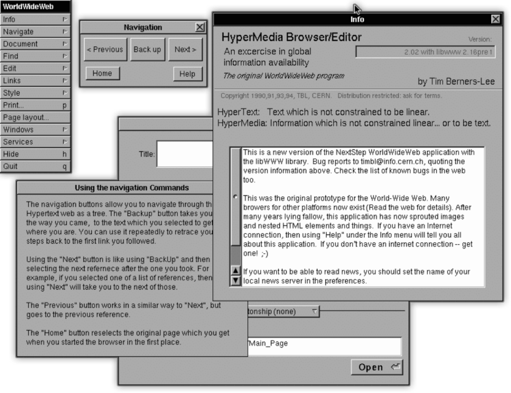
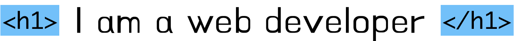

HTML의 일생

누군가의 이야기는 태어난 곳에서부터 시작을 하죠. HTML의 고향은
어디일까요? 미국이 워낙 IT로 유명하다 보니 HTML의 고향도 미국으로
생각할 수 있는데요. 의외로 HTML의 고향은 아름다운 자연경관으로 유명한
🇨🇭스위스입니다. 스위스에는 유럽 입자 물리 연구소 CERN이라는 저명한
물리학 연구소가 있는데요. 이곳은 개별 국가의 범위를 넘어서는 연구를
수행하기 위해 만들어진 곳입니다.
이런 국제적인 연구소에서 1990년도에
역사적인 사건이 발생합니다.
그것은 바로 웹의 등장입니다. 이 웹이라는 서비스를 통해서 HTML이 세상에
드러났습니다. 이 웹이라는 서비스와 HTML을 만든 사람은 웹의 아버지라고
불리는 팀 버너스리입니다. 유럽입자물리연구소는 특성상 한 개별적인
국가의 범위를 넘어서는 연구를 위해 만들어진 곳입니다. 그렇다보니
자연스레 여러 연구자들이 엄청나게 많은 정보와 자료를 주고 받게
되었습니다. 그래서 팀 버너스리가 효율적으로 정보를 주고 받을 수 있는
시스템을 1980년도부터 약 10년동안 연구하다가 1990년도에 결과물들을
세상에 드러내기 시작했습니다.
1990년 10월
세계 최초로 웹페이지를 만드는 에디터를 만듭니다

1990년 11월
HTML 페이지를 볼 수 있는 세계 최초의 웹브라우저인 World Wide Web을
만듭니다.

1990년 12월
웹서버라는 프로그램을 만들고 그 프로그램이 설치되어있는 컴퓨터에
info.cern.ch라는 주소를 부여합니다.
HTML의 정의

어떤 단어든 그 이름과 정의가 가지는 의미는 매우 추상적이어서 한번에
이해하기는 어렵지만, 그 대상의 가장 큰 특징을 나타내고 있기에 집중해서
살펴볼 가치가 있습니다. HTML이란 HyperText Markup Language의
약자입니다. 각 단어마다 띄어쓰기가 있기 때문에 단어별로 의미를 나눠서
살펴보도록 하겠습니다.

의미를 위와 같이 나눌 수 있는데요. 풀어서 이야기하면 하이퍼텍스트를
중요한 특징으로 가지는 마크업 형식의 언어라는 것입니다. 웹페이지를
보면 언제나 있는게 있습니다. 세계 최초의 웹페이지에도 있는 것인데요
그것은 바로 링크입니다. 그 링크라고 하는 기능이 하이퍼 텍스트입니다.
그리고 마크업이라고 하는 것은 다음에 나오는 언어와 관련있는데
마크업이라는 문법적인 특성을 가지고 있는 언어라는 뜻입니다. 즉
하이퍼텍스트를 가장 중요한 특징으로 하고 마크업이라는 형식을 가진
언어가 HTML인 것입니다.
언어의 가장 핵심적인 특징은 바로 약속입니다. 이 약속이 있기 때문에
우리는 상대방의 이야기를 해석하고 소통할 수 있습니다. html은
웹브라우저에 표시되는 웹페이지를 만들어 달라고 컴퓨터에게 요청하는
언어입니다 사람과 컴퓨터 사이의 약속일 뿐만 아니라 사람과
웹브라우저라고 하는 프로그램 사이에서 서로가 이해할 수 있는 약속이
바로 html인 것이죠 우리가 시간을 제한된 숫자로 나타내듯이 html도
정보를 표현하기 위한 약속들이 있습니다. 그것은 바로 태그입니다. 어떤
상품에 붙어있는 태그는 그 상품에 대한 정보를 나타내고 있습니다.
HTML에서도 마찬 가지입니다.

위와 같은 문장이 있다고 해봅시다. 이 내용에 태그를 붙임으로써 이
문장이 웹페이지에서 어떤 역할을 하는지 다르게 표현할 수 있습니다.
예를들어 문장의 앞 뒤에 h1이라는 태그를 붙여보도록 하겠습니다. 여기서
h1이라는 것은 제목을 나타내는 태그입니다. 즉 h1 태그를 붙임으로써 이
문장은 해당 웹페이지에서 제목을 나타내는 역할을 가지게 됩니다. 다른
태그를 이용해서 h1과 동일하게 보이게 만드는 방법도 있지만 h1을
사용한다는 것은 해당 내용이 제목이 된다는 정보를 주는 것이기 때문에
구분해서 사용해야 합니다.

이 구조를 좀 더 상세히 살펴보면 앞에 태그를 여는 태그, 뒤에 슬러시와
함께 있는 태그를 닫는 태그라고 합니다. 그리고 태그 사이에 잇는 내용을
콘텐츠라고 하고, 콘텐츠와 태그를 포함한 전체를 한 엘리먼트라고
표현합니다. 이렇게 html에서 사용하는 태그들이 약 150개 이상이 있고
시간이 지날수록 추가되는 태그들도 있습니다. 하지만 이것들을 전부 외울
필요는 없습니다. 자주 사용하는 것들만 외우고 나머지는 필요에 따라
찾아서 사용하면 되기 때문인데요. 그렇다면 자주 사용하는 것들은 어떻게
알 수 있을까요? 가장 확실한 방법은 통계수치를 이용해서 데이터의
중요도를 나누는 것입니다. 구글에서 전 세계에서 만들어진 수 많은
웹페이지를 분석하고, 그 통계를 바탕으로 자주 사용하는 html tag를
분석해 놓은 리포트가 있습니다. 총 700만개 이상의 웹페이지를 분석한
결과 평균적으로 약 28개의 서로 다른 엘리먼트를 사용하였습니다

우선 위 28개의 태그들을 높은 우선순위로 익히는게 훨씬 효율적인
HTML학습방법일 것입니다. 그럼 다음 장에서 미션을 통해 HTML 태그들을
익혀보도록 합시다.